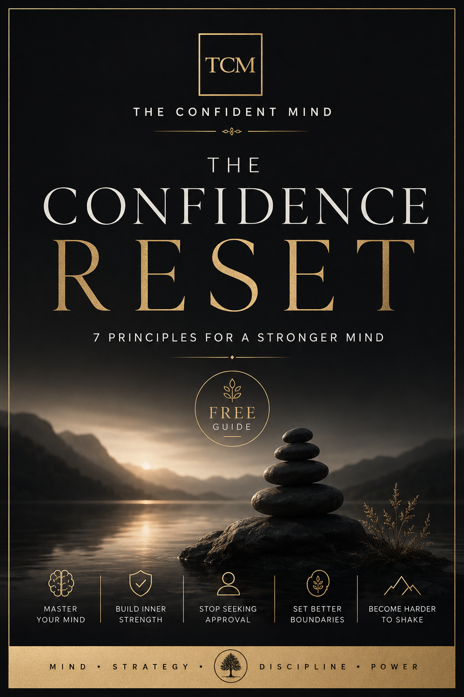

FREE GUIDE
The Confidence Reset
Seven practical principles for a stronger mind, clearer decisions, better boundaries, and steadier self-trust.
Seven principles
- The Approval Trap. A reaction is one data point; it is not automatically a verdict on whether you were right.
- Stop Outsourcing Your Self-Worth. Let achievement and attention matter without making them the foundation of your worth.
- Learn to Trust Your Decisions. Make decisions with the information you have, set a deadline, and adjust when needed.
- Say No Without Guilt. Guilt is a feeling, not a verdict. A clear no can still be respectful.
- Stop Overexplaining. Clarity says what is true; a decision does not need a defense to be valid.
- Build Evidence of Confidence. Self-trust grows from small promises kept, discomfort handled, and recovery after mistakes.
- Become Harder to Shake. Create space between feeling and action: pause, name, choose, act.
Get The Confidence Reset — Free
Enter your email on our secure free-guide page and receive the complete guide.
Get the Free Guide →Your email is collected securely through our free-guide signup page.
The guide is free to share in its complete, unaltered form. It is educational and intended for personal development. It is not a substitute for therapy, counseling, or professional mental health care.